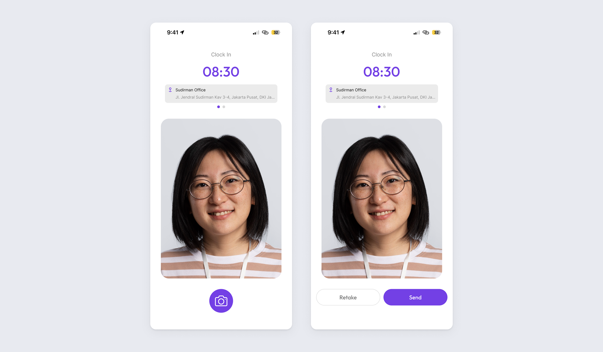
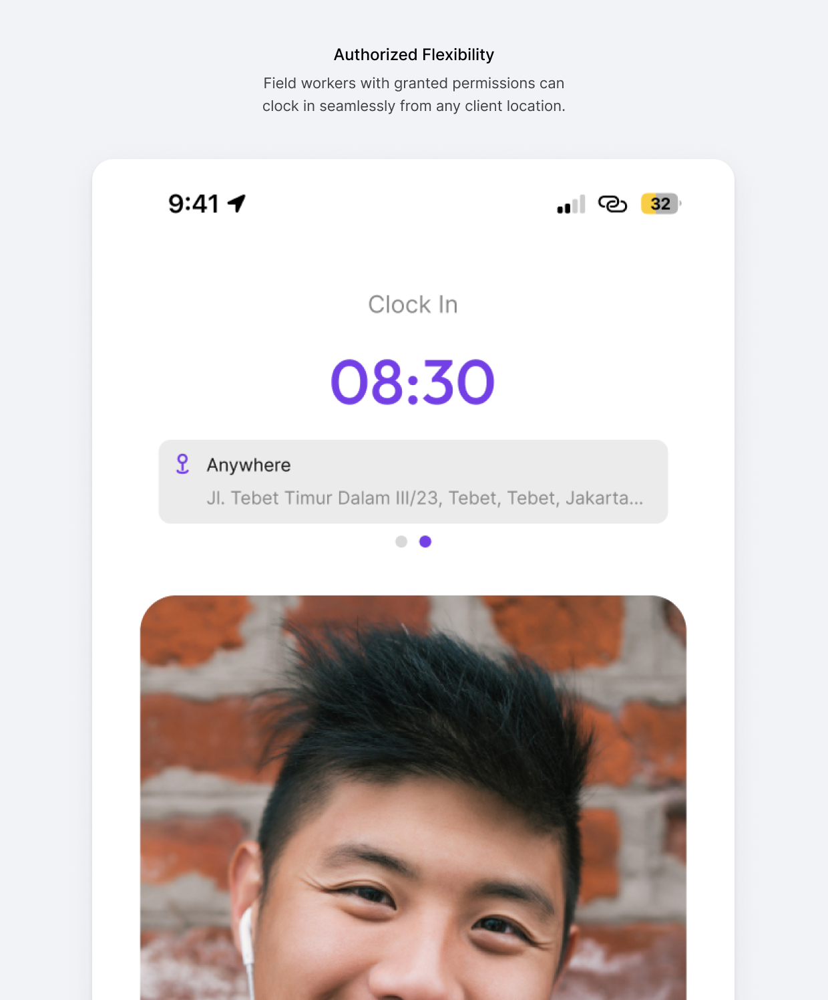
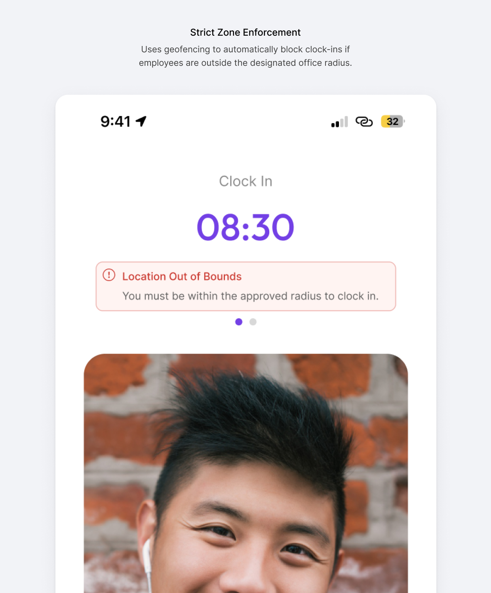
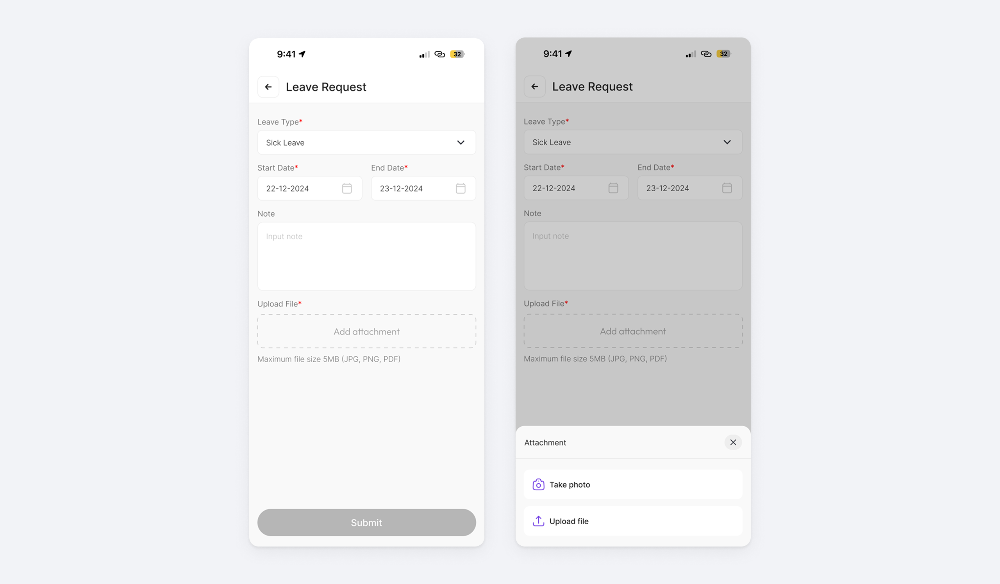
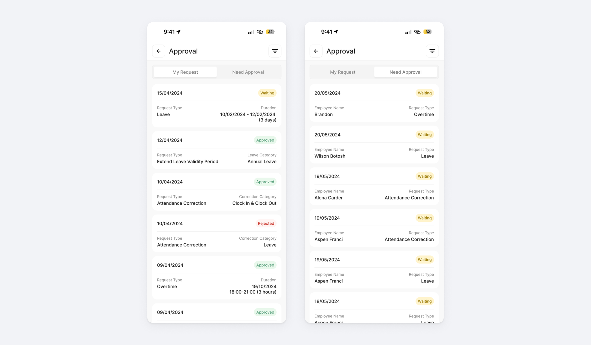
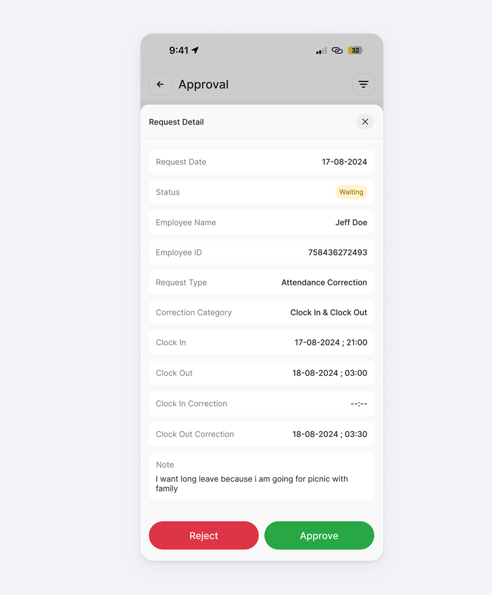

Werk: Mobile App
Employee Self Service was built for desktop, which is a problem when most of the people who need it aren’t sitting at a desk. Commuters, field workers, and sick employees had to boot up a laptop or wrestle with a heavy mobile browser just to clock in or request leave. The delay alone was enough to cause missed logs and frustration.
Rather than shrinking the desktop app onto a phone screen, I designed the mobile experience around quick, task-first micro-interactions. Using native GPS and camera access, tasks like clock-ins, leave requests, and manager approvals are down to a few taps.
Location-Based Attendance
Mandatory in-office check-ins waste hours and kill productivity for field workers navigating city traffic. I designed a location-agnostic mobile attendance system using GPS and camera verification, letting employees clock in instantly on the go, while flexible geofencing still lets companies enforce their own security and attendance policies.
Frictionless Biometric Clock-In
I stripped the check-in process down to its simplest form: employees record attendance via a quick selfie, capturing visual proof and real-time GPS coordinates in one frictionless step, no menus to navigate.

Adaptive Geofencing & Policy Controls
Remote attendance policies vary drastically between companies, so I designed a dynamic restriction system synced directly with the core HR portal, letting each company configure its own rules without touching the app itself.


Frictionless Leave & Proof Upload
Informal absence reporting via WhatsApp and delayed medical certificates fragment data, burden HR, and throw off payroll accuracy. I designed a mobile flow with direct camera integration that captures verified medical proof at the exact moment of the absence request, updating HR and managerial dashboards instantly, no manual follow-up, no middleman.
To fit real-world scenarios, the attachment modal lets users either “Take Photo” for instant capture or “Upload File” for existing documents, adapting to whatever context they’re in.

Mobile Approval Hub
Tethering approvals to desktop workstations delays urgent requests and creates bottlenecks the moment a manager steps away from their desk. I designed a mobile-first, centralized inbox that lets managers resolve team requests asynchronously, turning dead time into productive time and clearing operational backlogs on the spot.
Dual-Tab Architecture
The Approval hub uses a clean two-tab structure to avoid cognitive overload: “My Request” for the manager’s own submissions, and “Need Approval” for their managerial duties, so users always know exactly which context they’re in.

Frictionless Review & Action
“Need Approval” functions as a streamlined queue. Managers scan pending requests, tap into one for context (dates, reasons, attached proof), and approve or reject directly in the app, bypassing the desktop portal entirely for routine decisions.

Outcome
The result is an attendance and approval system that finally matches how people actually work: on the move, not tied to a desk. Field workers no longer lose productive hours to mandatory office check-ins, and absence reporting no longer relies on a WhatsApp message and a stack of paper certificates that may or may not reach HR in time. For managers, approvals stop being a task that waits until they’re back at their desktop. A pending leave request can be resolved from a train, a queue, or between meetings, closing the gap between when a request is made and when it’s acted on.